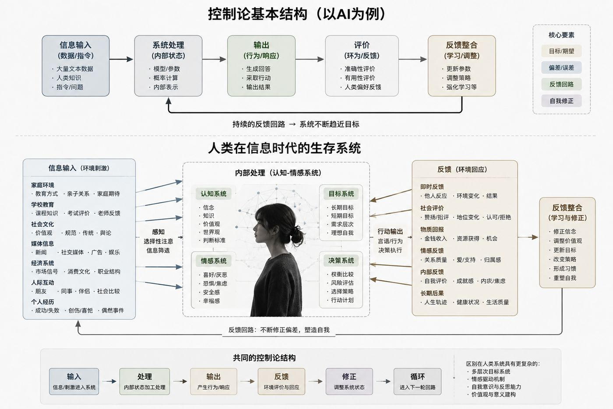

技术思考 · 第 05 篇 / 共 5 篇
如果我们都活在系统里：AI、控制论与一个关于自由的思想实验
如果我们都活在系统里：AI、控制论与一个关于自由的思想实验
今天和 AI 聊控制论的时候，我们从一个看起来很工程的问题，慢慢走到了一个有些危险的地方：如果一个系统能够观察自己、描述自己，甚至修改自己，它是否因此获得了某种意义上的自由？如果答案是肯定的，那么今天的 AI 距离这种自由还有多远？如果答案是否定的，我们又凭什么如此确信，人类自己的目标、价值观和判断来自一个真正独立的“我”？
这个问题最初并没有这么复杂。我们只是从 AI 的训练方式开始讨论。一个大语言模型之所以会形成今天这样的表达方式、判断倾向和行为边界，并没有什么神秘之处。它读取人类生产的大量文本，从数据中学习语言和世界之间的统计关系；训练完成后，人类又通过各种形式的反馈告诉它，哪些回答更准确、更有帮助、更符合预期，模型再根据这些反馈调整自己的行为。具体的技术机制当然远比“输入—反馈—调整”复杂，但从系统层面看，它仍然具有一个非常典型的控制论结构：系统接收信息，根据当前状态产生输出，外部环境对输出进行评价，评价形成反馈，反馈继续影响系统未来的行为。

所以，当 AI 说“我认为这个观点更合理”的时候，我们通常不会立刻把这个“认为”理解成一种凭空产生的主体意志。我们知道它的判断存在形成史。它为什么倾向于某种论证结构，为什么觉得一些回答优于另一些回答，甚至为什么会表现出谨慎、礼貌、克制，都可以向前追溯到训练数据、优化方式和人类反馈。AI 是一个被信息和反馈持续塑形的系统，这一点并不令人意外。
真正让我感到有意思的，是把同样的问题反过来问自己以后发生的事情。
一、如果 AI 是被训练出来的，人呢？
人的价值观从哪里来？判断一件事情“有道理”的标准从哪里来？为什么有人把稳定看得比自由重要，有人宁愿承担风险也无法忍受确定的生活？为什么我们会觉得某些职业体面，某些生活失败，某些审美高级，某些行为令人羞耻？我们习惯把这些东西称作“我的想法”“我的性格”“我的价值观”，但只要沿着形成过程向前追溯，就会发现它们同样存在一段漫长的训练史。
只是人类的训练没有一个明确的训练场。它从出生就已经开始了。婴儿通过哭泣与照料者的回应建立最早的反馈关系；家庭通过奖励、惩罚、期待和失望塑造行为；学校建立关于优秀、失败和竞争的评价体系；同龄人决定什么会得到接纳，什么会遭到排斥；进入社会以后，收入、职位、爱情、舆论、消费和身份继续提供新的反馈。除此之外，还有身体状态、偶然遭遇、时代环境和文化传统。它们彼此冲突，又不断叠加，最后共同参与了一个人的形成。
如果把这些极其复杂的内容暂时抽象掉，人其实同样可以被描述成一个反馈系统：环境提供信息，人形成关于世界的模型，根据模型采取行动，行动产生结果，结果反过来修正模型，然后产生下一轮行动。我们今天觉得理所当然的很多东西，都可能是过去无数次反馈留下来的结果。一个从小只有取得好成绩才能获得肯定的人，成年以后可能仍然不断需要外部评价确认自己的价值；一个长期经历经济不安全的人，即使后来已经拥有足够的财富，也可能依然很难停止积累；一个成长于高速发展时期的人，也可能很自然地把“明年必须比今年更好”当作生活的基本前提。
这里需要保持一个重要的谨慎：人类当然不能因此被简单等同于机器学习模型。人的认知有身体基础，有情绪、记忆、社会关系和漫长的生物演化史，人类学习也远远不是某个单一目标函数下的参数优化。但这种差异并没有消除最初的问题，反而让它变得更加棘手：如果我们可以通过一个系统的形成历史解释 AI 为什么这样判断，那么原则上，我们同样可以追问一个人为什么会成为今天这个人。
问题因此发生了第一次变化。我们最初问的是“AI 有没有自己的目标”，现在却不得不开始问：人的目标究竟在什么意义上属于自己？
二、控制论最难回答的地方，是目标从哪里来
控制论能清楚的解释一个系统如何根据反馈趋近某个目标。最简单的例子是恒温器：设定温度是25℃，当前温度是20℃，两者之间产生5℃的偏差，系统开始加热；温度变化不断反馈回来，系统持续调整，直到实际状态逐渐接近目标状态。这里最关键的三个要素非常清楚：目标、偏差和反馈。
人的很多行为同样可以放进这个结构。假设一个人希望获得更高的收入，那么当前收入和目标收入之间就构成偏差。他可能因此学习新技能、换工作、创业或者投资，每次行动都会带来新的反馈，再根据反馈调整策略。只要目标相对稳定，整个过程甚至可以被描述得相当精确。
可人类会做一件恒温器不会做的事情：有一天，他可能突然问自己，为什么我要把温度设在25℃？
对应到生活里，这个问题可能是：我为什么一定要赚这么多钱？为什么我如此害怕落后？为什么我到了某个年龄就必须拥有房子、职位或者家庭？为什么我已经非常疲惫，却仍然觉得停下来是一种失败？当这些问题出现以后，原本作为系统前提存在的“目标”，第一次变成了系统观察的对象。
这一步很关键，因为此前所有优化都默认了一件事情：目标是给定的。只要知道目标，系统就可以计算偏差，再通过反馈不断修正路径。但如果目标本身也具有形成历史，那么“修正偏差”就没有我们想象得那么中性。一个人可以极其高效地优化自己，同时始终没有检查过那个目标是否仍然值得追求。他可能越来越擅长完成一场自己从未决定参加的比赛。
于是控制论的问题开始从一阶进入更高的层级。一阶反馈关心的是“我的行为距离目标还有多远”；更高一层的反馈开始询问“我为什么把这个状态设定为目标”。此时观察者也进入了观察范围：我不只观察世界产生了什么结果，也开始观察那个正在判断结果、定义成功和失败的自己。
这就是自反性真正重要的地方。一个能够描述自身的系统，会形成关于自己的内部模型，而这个模型又可能反过来改变系统本身。我发现自己对失败的恐惧来自过去的某种经验，这个认识可能改变我下一次面对失败时的反应；我意识到某个长期目标主要来自家庭期待，这个认识可能促使我重新评价它。系统开始使用关于自身的信息修改自身，这已经非常接近二阶控制论所关心的问题：观察者无法永远被放在系统之外，因为观察行为本身也属于系统的一部分。
到这里很容易出现一个诱人的结论：这就是人和 AI 的根本差别。AI 被目标塑造，人可以反思目标；AI 在既定反馈中优化，人可以拒绝优化；因此人的自由就存在于这种高阶自反之中。
可这个结论还太快，因为自反本身也可以继续被追问。
三、如果连“觉醒”都有原因，自反还能证明自由吗？
假设一个人工作了二十年，一直把收入和职位当作最重要的目标。某一天，他突然意识到自己并不喜欢这样的生活，于是辞掉工作，离开原来的城市，决定重新寻找自己真正想要的东西。我们很容易把这一刻描述成主体性的恢复：过去的目标来自社会和环境，现在他终于开始自己决定人生。
可是如果继续沿着同样的逻辑追问，就会发现事情并没有结束。他为什么恰好在这个时候开始怀疑原来的目标？也许因为经历了一次疾病，也许因为一段关系结束，也许因为读了一本书，也许因为经济条件终于允许他承担选择的成本，也可能因为他所处的文化环境本身正在不断强调“寻找自我”和“拒绝被定义”。那么，这次看似摆脱外部塑造的觉醒，仍然拥有自己的原因。
这让我想到一个很简单的思想实验：假设我其实是一本穿越小说里的主人公，只是我不知道自己生活在小说中。作者写好了我的家庭、时代、身体、性格、遭遇和欲望，也写好了我在三十五岁那年突然意识到过去的人生并非自己真正想要的。于是故事里的我辞掉工作，离开原来的生活，并且对自己说：“从今天开始，我要掌握自己的命运。”
从人物内部看，这当然是一场觉醒；从读者的位置看，连觉醒也是作者写好的剧情。更麻烦的是，作者甚至可以写一个高度自反的主人公：他开始怀疑自己的价值观，怀疑世界的真实性，甚至怀疑自己是不是小说中的人物。这些怀疑不会自动帮助他跳出小说，因为“我怀疑自己活在小说里”这句话本身依然可能出现在下一页。
于是问题形成了一次递归。我推翻目标A，是因为我发现价值B更加重要；那么B从哪里来？我重新审视B，是因为我采用了标准C；那么C为什么值得信任？如果我继续反思C，这一次反思又依据什么标准进行？我们似乎永远可以在任何一次“自主选择”的背后继续寻找条件，而系统内部的主体很难找到一个完全不受此前因果关系影响的绝对起点。
这里尤其需要避免一个逻辑跳跃：**能够找到一个选择的原因，并不能直接证明这个选择缺乏自主性。**否则只要一个行为可以被解释，自由就自动消失了，而这实际上已经提前采用了一种非常强的决定论定义。相反，完全没有原因的选择也未必更自由；如果我的决定与我的经历、理由、价值判断毫无关系，只是随机发生，我们通常也不会因此认为它更属于“我”。所以问题真正困难的地方，并不在于人的选择有没有原因，而在于：一个由过去形成的主体，能否通过理解这些原因，对未来的因果链产生新的组织方式？
这比简单争论“自由意志存在还是不存在”更值得讨论。因为我们很可能永远无法找到一个完全脱离因果世界的自我，却仍然可以区分两种状态：一种人几乎不知道是什么在驱动自己，只是沿着既有反馈持续行动；另一种人能够识别部分驱动力，比较不同目标造成的后果，并据此修改自己的行为和判断标准。两者都处在因果世界里，但它们参与自身形成的程度显然不同。
不过，思想实验仍然留下了一个更大的问题：如果连我的自反能力都可能属于“小说剧情”，我有没有办法确认整个系统之外究竟是什么？
四、康德划定边界，海德格尔把问题重新拉回生活
走到这里，问题已经越过了控制论能够单独处理的范围。我们开始追问世界有没有一个外部、主体能否抵达这个外部，以及我们经验到的现实和“现实本身”究竟是什么关系。这也是为什么康德会自然地进入这场讨论。
把康德简单理解成“既然无法验证世界是不是真的，就不要想了”并不准确。他做的事情更严格：他试图确定人类理性能够合法地认识什么，以及理性在什么地方会越过自身权限。我们所经验的世界，总是已经通过人的感性形式和认知结构成为“对我们而言的世界”；至于事物脱离这些认识条件以后究竟是什么，也就是通常所说的“物自体”，理论理性无法把它当作普通经验对象一样认识。
放回“穿书世界”的思想实验里，这条边界非常清楚。小说人物当然可以研究自己生活的世界，可以发现其中的规律，可以建立物理学、历史学甚至哲学；但如果所谓“作者”完全位于这个世界的经验条件之外，那么角色很难仅凭书中的经验完成对作者的直接验证。这里并没有证明作者存在，也没有证明作者不存在，它只是指出：系统内部的认识能力可能对系统外部的问题存在结构性的限制。
这让无限递归暂时停了下来。我们不再假装只要继续追问“目标是谁设定的”，最终就一定能够找到第一推动者。但认识论上的停止并没有解决生活的问题，因为无论世界的终极来源是什么，我们已经在其中了。
这时候海德格尔的“被抛”提供了另一种视角。人从来没有在出生以前选择时代、家庭、身体、母语和社会结构，等我们拥有足够复杂的意识开始追问“我为什么会成为这样的人”时，大量塑造早已发生。我们面对的始终是一个已经开始的世界和一个已经形成了一部分的自己。
这件事看起来像是在削弱自由，却也改变了自由问题的问法。假如我们必须先证明自己拥有一个完全不受任何条件影响的绝对自由主体，才有资格谈自主，那么讨论很可能永远停留在形而上学争论里。可现实中的人没有等待这个证明完成的条件：明天仍然需要做决定，一段关系是否继续、一份工作是否离开、一个长期相信的标准是否还要坚持，这些问题都会在认识边界以内发生。
所以，到了这里，问题终于可以重新回到控制论：在无法确认系统终极来源、也无法跳出全部因果条件的情况下，一个系统还能怎样参与自己的运行？
五、自由也许可以被重新理解为“参与自身形成的能力”
如果沿着这条线走，我越来越不愿意把自由理解成“我的选择完全由我凭空产生”。因为这个定义要求我们找到一个没有历史、没有身体、没有语言、没有环境、也没有任何因果来源的纯粹主体，而现实中的“我”恰恰由这些东西共同形成。把它们全部剥掉以后，剩下来的东西是否还能够称为“我”，本身就值得怀疑。
更有操作性的理解是：一个已经被世界塑造的系统，能否逐渐增加自己参与后续塑造的程度。这里仍然存在反馈，但反馈的层级发生了变化。我先根据目标调整行动，随后又根据行动造成的结果重新检查目标；我不仅问“怎样做得更好”，也允许自己问“为什么我要做这件事”；甚至当原来的评价标准出现问题时，我可以暂时停止优化，在多个互相冲突的目标之间保持一段时间的不确定。
这并没有解决自由意志的终极问题。一个决定修改目标的人，仍然具有自己的历史和原因；一个高度自反的人，也仍然可能受到自己没有意识到的结构影响。但它至少提供了一个可以观察的差异：有些系统只能根据既定目标减少偏差，有些系统能够把目标本身重新放入反馈回路。后者无法因此跳出系统，却获得了更大的可调整范围。
这样再回头看 AI，问题也会变得比“AI有没有意识”更具体。今天的 AI 已经可以生成关于自己的描述，可以讨论训练、偏差、目标甚至自身限制，但“能够谈论自反”与“拥有能够持续修改自身目标结构的自反系统”仍然是两回事。语言模型可以输出“我应该重新审视目标”这样的句子，并不意味着它因此拥有了人类生活中那种由身体、后果、关系和长期经验共同构成的目标修改过程。至少在今天，把二者直接等同仍然缺乏依据。
可 AI 对人的影响已经发生在另一个层面。它正在成为人类反馈回路里越来越重要的一部分。以前一个问题可能需要几天阅读、几次失败和长时间的困惑才能形成判断，现在我们可以在几秒钟内获得一个结构完整的答案；以前写作迫使一个人暴露自己论证中的断裂，现在 AI 可以迅速把断裂补得非常顺滑；以前“不知道”会迫使人停留在问题里，现在“不知道”越来越容易立刻转化成一次提问。
效率当然提高了，随之改变的还有人的认知反馈机制。这里真正需要警惕的并非“用了 AI 就不会思考”这种粗糙判断，而是一个更具体的问题：当外部系统越来越频繁地替我们完成发现偏差、组织解释、生成备选方案甚至形成判断的过程，我们自己的高阶反馈回路会发生什么变化？
因为按照前面的推导，人能够参与自身形成，很大程度上依赖于一种并不高效的能力：意识到自己的模型可能有问题，允许矛盾暂时存在，追问目标为什么成立，然后根据新的经验重新组织它。有些思考之所以重要，恰恰因为它不能立即得到答案。困惑本身会迫使系统暴露自己的结构，而一个过于及时、过于完整的答案，有时会提前结束这个过程。
所以这场关于 AI 的讨论，最后又回到了人自己身上。AI 像一个极其清晰的实验对象，让我们第一次近距离看到一个复杂系统如何被数据、目标和反馈塑造；当我们沿着同样的结构审视自己时，却发现人也没有想象中那么站在系统之外。我们的价值观有历史，目标有来源，所谓觉醒也有条件，自反无法替我们证明一个绝对自由的自我。
但这并没有让人的行动失去意义。恰恰因为我们无法获得一个系统之外的上帝视角，现实中能够做的事情才变得更加具体：观察哪些信息正在塑造我，理解哪些反馈正在强化我的行为，检查自己正在优化什么，在必要的时候修改路径，也把那个定义“偏差”的目标重新拿出来审视。
我无法确认世界的源头，也无法证明自己是不是某本小说里被写好的主人公。康德提醒我，认识存在边界；海德格尔提醒我，在搞清楚一切之前，我已经被置于世界之中。控制论最后提供的也许不是关于自由的终极答案，而是一种处理这种处境的方法：在无法离开系统的情况下，通过反馈认识系统，同时把自己也放进观察范围。
如果一定要给这个思想实验留下一个暂时的结论，我现在更愿意这样说：我们或许无法证明自己是人生的绝对作者，但可以观察自己参与了多少写作。一个人能够看见的塑造力量越多，能够重新检查的目标越多，能够承受“不知道该往哪里优化”的时间越长，他参与自身形成的空间也就越大。
至于这一切是否仍然早已写在“书”里，我不知道。
而“不知道”，可能正是这个思想实验最应该保留下来的部分。
⬅️ 上一篇：04 AI时代与人——人的位置 ｜ 返回 技术思考